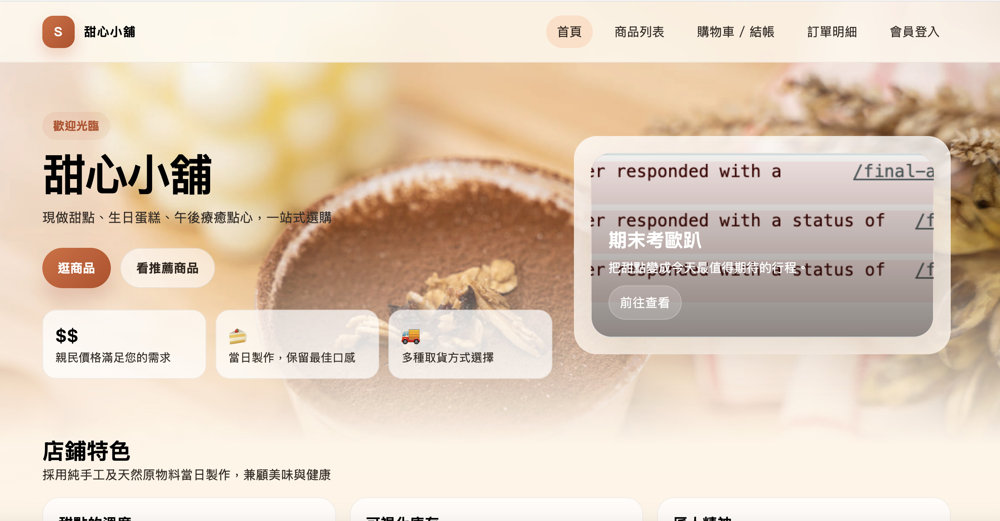
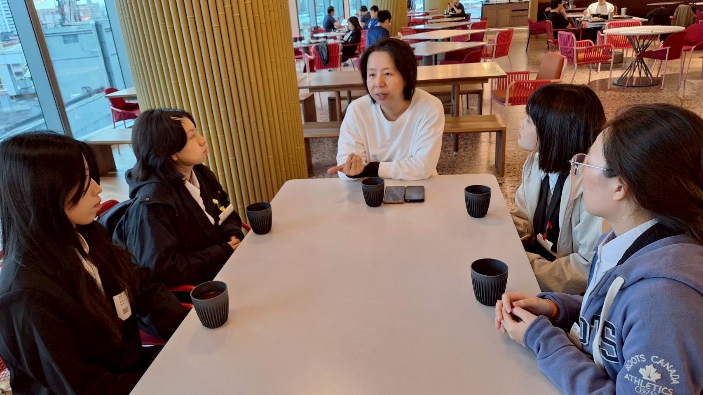
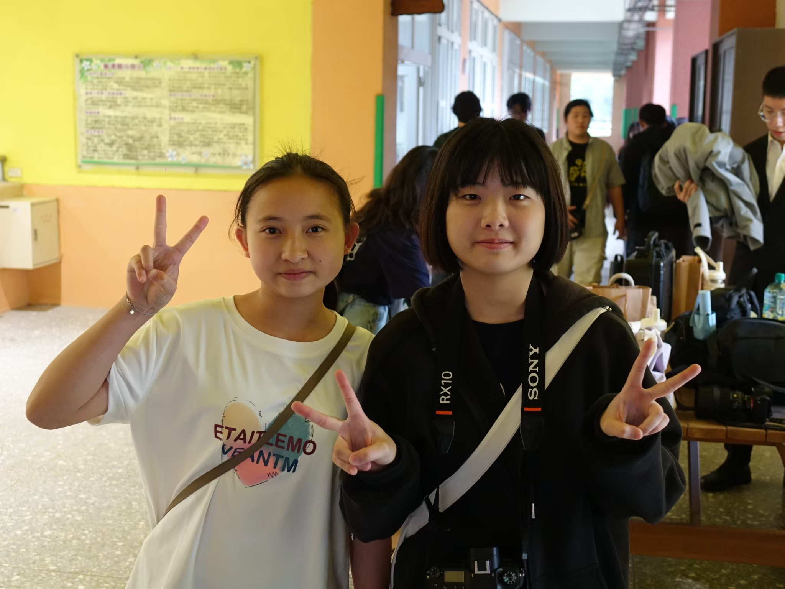
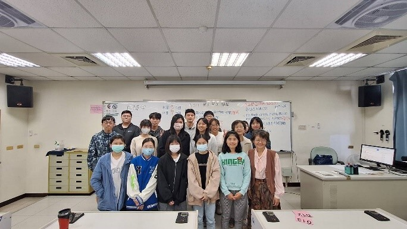

自我介紹 (About Me)
我是陳虹華，目前就讀於國立聯合大學資訊管理學系二年級。我熱衷於透過程式編碼解決實際生活中的問題，求學期間主要專注於 Android App 開發與後端資料庫系統的整合應用。除了技術的精進，我也積極投入志工服務，擔任聯大偏鄉課輔的大學伴與帶班現場技術後援，運用自身所學縮短數位落差。在課業與專案開發中，我具備良好的邏輯思考與統計分析能力，能將數據思維融入系統架構設計。我的目標是持續深耕全端網頁與行動應用的開發領域。
教育背景
國立聯合大學 ‧ 資訊管理學系
重要修習課程：
程式設計、資料庫管理、人工智慧程式設計、前端網頁程式設計、應用系統程式設計。
彰化縣立和美高級中學 - 普通科
實務經驗與實習 (Experience)
教育部數位學伴計畫 - 大學伴 & 系統帶班
2025.09 - 2026.06
角色與貢獻：負責為偏鄉國中小學生進行一對一遠距教學；擔任帶班現場技術後援，即時排除大學伴遠距系統與硬體障礙。
習得技能：將複雜知識轉化為易懂語言，具備客製化數位教材與線上引導能力；展現第一線障礙排除與緊急應變能力。
資訊志工
2026.04 - 2026.06
角色與貢獻：協助國小學生學習 Scratch 程式設計，培養邏輯思考能力。
習得技能：引導建立條件判斷與迴圈等核心思維，展現將抽象科技概念轉化為具象語言的溝通與教學科技引導力。
專業技能 (Skills)
程式語言 & 網頁開發
資料庫 & 網路技術
專案作品 (Projects)

甜點訂購管理系統
整合 HTML/CSS/Bootstrap 前端與 PHP/MariaDB 資料庫連線管理應用，結合點選控制邏輯優化。具備管理員新增商品，商品列表自動刷新功能。
參與活動照片 (Gallery)

Google Taiwan 企業參訪與交流
參訪 Google 臺灣 Android 部門，深度學習跨國科技公司的文化與團隊高效溝通模式。

教育部數位學伴計畫相見歡活動
參與教育部數位學伴計畫實體交流，以圖片記錄與小學伴跟大學伴從相識到相熟的熱絡過程。
專業見解與心得 (Articles)
企業參訪心得：跨國科技公司與本土企業的文化思辨
2025年12月 | 分類：企業實務參訪
參訪 Google 臺灣 Android 部門後，深入了解了跨國企業在運行上流程。相較於本土企業傳統的決策模式，外商的高度自主性與彈性文化令我印象深刻。這也激勵我除了精進本科學術技術，更應同步培養良好的團隊溝通與跨領域整合能力。
獲獎與榮譽 (Awards)

-
聯大英文單字接龍 - 第三名2024在 2024 年的校內英文單字接龍比賽中獲得第三名